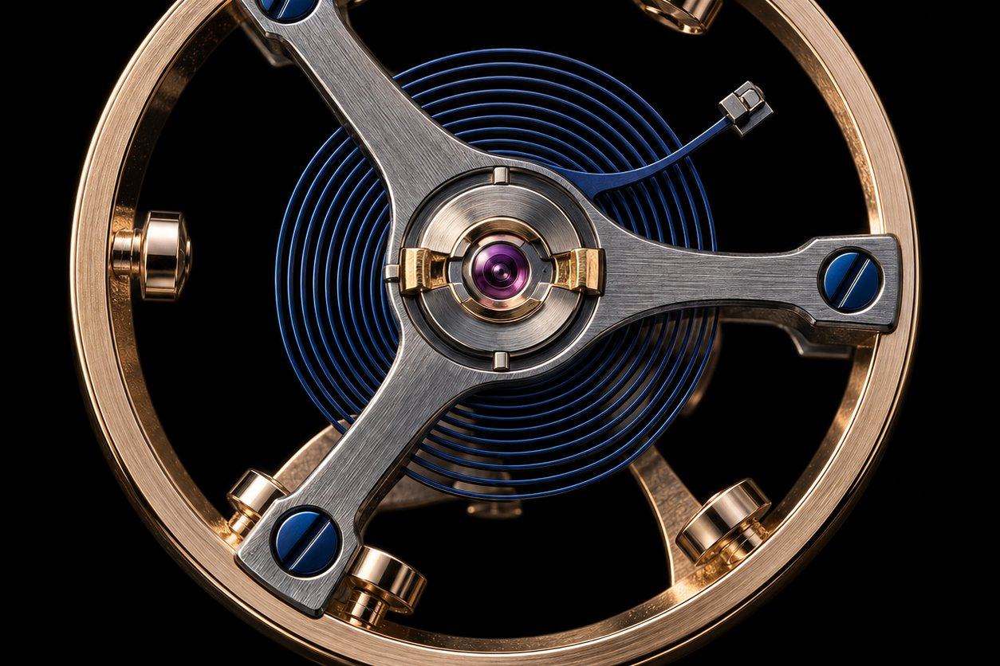
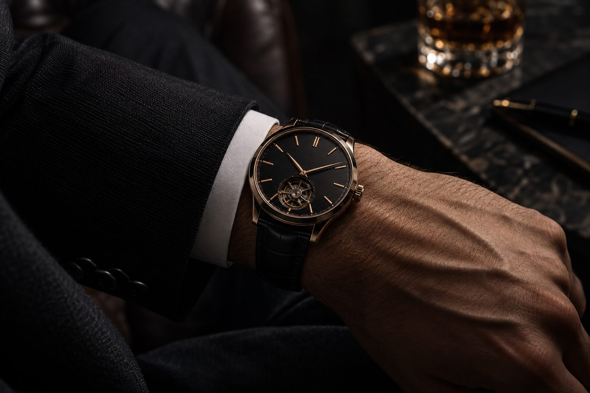

永遠を、刻む。
01
三百七十二の部品。
02
それが、ひとつの鼓動になる。
03
キャリバー KU-01。
久遠、ここに完成。
PHILOSOPHY
久遠とは、尽きることのない時の流れのこと。
私たちは電池に頼らない。ゼンマイと歯車、そして職人の指先だけで、
永遠の一片を腕の上に置く。
機械が時を刻む音は、この世でいちばん静かな宣言だ。

CRAFTSMANSHIP
ひとつのムーブメントが完成するまで、百二十時間。
テンプの青いひげゼンマイは、一本ずつ手で巻かれる。
早く作る方法はある。だが、美しく作る方法は、これしかない。
CALIBRE KU-01
372
部品点数
28,800
振動数 / vph
72h
パワーリザーブ
41mm
ケース径
5気圧
防水性能
120h
組立工数
THE FILM

ON THE WRIST
マットブラックの文字盤に、ローズゴールドの針。
主張しすぎず、しかし忘れがたい。
スーツにも、何も纏わない日にも。
永遠を、刻む。
KUON — time, carved for eternity.